Kacper Frelek
Jestem inżynierem lotnictwa i kosmonautyki specjalizującym się w Numerycznej Mechanice Płynów (CFD), aerodynamice dużych prędkości gazów ściśliwych oraz optymalizacji aerotermodynamicznej kapsuł powrotnych.
Moja praca inżynierska koncentruje się na rozwiązywaniu złożonych zjawisk przepływowych w zakresach prędkości poddźwiękowych, okołodźwiękowych, naddźwiękowych i hipersonicznych. Od analizy flatteru łopatek w GE Aerospace, przez projektowanie aerodynamiki rakiet nośnych w Rocket Factory Augsburg, po badania wejścia w atmosfery planetarne na Politechnice Warszawskiej.

✈️ Experience & Engineering Trajectory
W Instytucie Lotnictwa w Warszawie (EDC) we współpracy z GE Aerospace przeprowadzałem zaawansowane analizy aeromechaniczne wieńców łopatkowych sprężarek i turbin lotniczych silników komercyjnych. Moja praca obejmowała budowę modeli dynamiki strukturalnej w środowisku ANSYS, wyznaczanie diagramów Campbella i Goodmana, ocenę trwałości zmęczeniowej o wysokiej liczbie cykli (HCF) oraz walidację symulacji z eksperymentalnymi pomiarami tensometrycznymi i optycznymi (Blade Tip-Timing).
Podczas stażu w dziale aerodynamiki w Rocket Factory Augsburg (RFA) w Niemczech uczestniczyłem w aerodynamice zewnętrznej wielostopniowej rakiety orbitalnej RFA ONE. Modelowałem okołodźwiękowy wzrost oporu falowego, interferencję fali uderzeniowej z warstwą przyścienną na owiewkach i tunelach kablowych oraz recyrkulację denną gazów wylotowych (plume-on vs plume-off) pod kątem osłon termicznych.
W Kole Naukowym Lotników / Sekcji Rakietowej SKA kierowałem optymalizacją aerodynamiczną kadłubów rakiet naddźwiękowych, w tym dzielonych canardów rakiety FOK oraz zespołu głowicy i stateczników rakiety GROT.
MSL Forebody Entry Aeroheating
Badania magisterskie: Wysokoentalpowa nierównowagowa aerotermodynamika kadłuba czaszowo-stożkowego 70° kapsuły MSL, walidowana względem danych z tunelu Caltech T5 przy użyciu chemii Park 2T i modeli katalityczności powierzchniowej.
Turbulence Modeling: uRANS, DES & LES
Tranzycja warstwy przyściennej, rozdzielczość mikroskali Kołmogorowa i niestacjonarna dynamika śladu przy głębokim przeciągnięciu.
Reusable Launch Vehicle Control
Aerodynamika tytanowych sterów kratownicowych SpaceX Falcon 9 w zakresie liczb Macha 0.8–1.91 oraz baza danych aerodynamicznych (ADB) wejścia Starshipa.
Turbomachinery Vibration & HCF
Wyznaczanie rezonansów na diagramach Campbella, zapobieganie flatterowi łopatek, parametry modalne zależne od temperatury i obwiednie zmęczeniowe Goodmana.
uRANS vs DES vs LES Turbulence Showdown
🔬 Cel Fizyczny Badań
Gdy profil lotniczy pracuje w głębokim przeciągnięciu (kąt natarcia 30°) przy wysokiej liczbie Reynoldsa (\(Re = 6,85 \times 10^6\)), które podejście do modelowania turbulencji zapewnia fizycznie wierne odwzorowanie spływu wirów, pulsacji ciśnienia i dyssypacji energii?
Przeprowadziłem bezpośrednie porównanie numeryczne trzech paradygmatów w programie ANSYS Fluent:
- uRANS (Niestacjonarny RANS): Uśrednione po czasie równania Naviera-Stokesa z domknięciem SST \(k\text{-}\omega\). Bardzo ekonomiczny obliczeniowo, rejestruje dominujące cykle oderwania, lecz odfiltrowuje wysokoczęstotliwościowe kaskady widmowe turbulencji.
- DES (Symulacja Wirów Odłączonych): Hybrydowe podejście RANS-LES. Zachowuje odporne modelowanie warstwy przyściennej metodą RANS i aktywuje trójwymiarowe LES w strefach masywnego oderwania opływu.
- LES (Symulacja Dużych Wirów): Bezpośrednio rozstrzyga odfiltrowane trójwymiarowe równania Naviera-Stokesa aż do skali podsiatkowej (WALE / Smagorinsky), odwzorowując niestabilności Kelvina-Helmholtza i kaskadę energii w podzakresie inercjalnym.
| Model Turbulencji | Near-Wall Mesh (y⁺) | Resolved Flow Dynamics | Physical Fidelity | When to Use in Industry |
|---|---|---|---|---|
| uRANS (k-ω SST) | y⁺ ≈ 1.0 | Uśredniony pęcherz oderwania, dominująca częstość spływu | Odfiltrowuje widmową dynamikę turbulencji | Wczesne iteracje projektowe, wstępne obciążenia |
| DES (Spalart-Allmaras) | y⁺ ≈ 1.0 | Wielkoskalowe struktury wirowe, niestabilność warstwy ścinania | Optymalny kompromis dokładności i kosztu obliczeń | Ślady aerodynamiczne, separacja stopni, buffeting |
| LES (WALE / Subgrid) | y⁺ < 5.0 | Pełne trójwymiarowe wiry aż do skali Taylora i Kołmogorowa | Maksymalna wierność fizyczna (wysoki koszt obliczeń) | Aeroakustyka, flatter przeciągnięciowy, badania naukowe |
Synchronized Turbulence Comparison
Bezpośrednie porównanie czasowej ewolucji prędkości i wirowości dla uRANS, DES i LES przy kącie natarcia 30°.
DES vs LES Vorticity Magnitude
Wizualizacja drobnych wirów turbulentnych i zwijania warstwy ścinania w śladzie aerodynamicznym.
DES vs uRANS: Velocity & Pressure Fields
Sygnatury pulsacji ciśnienia i dynamika strefy recyrkulacji wzdłuż cięciwy profilu.


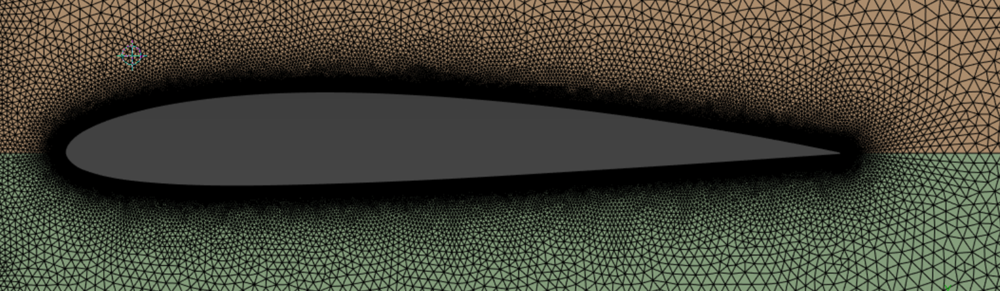
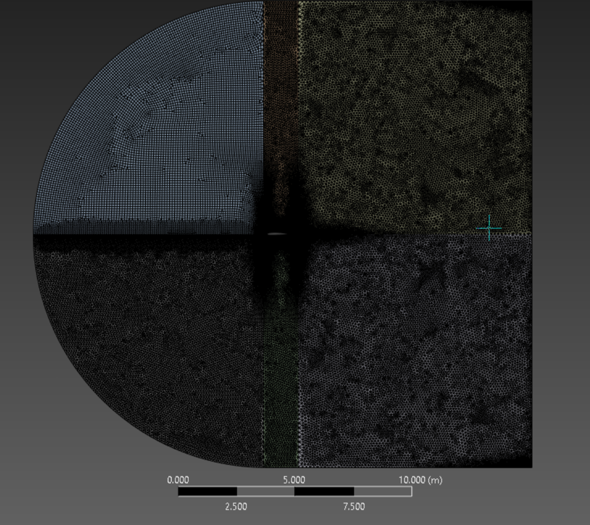
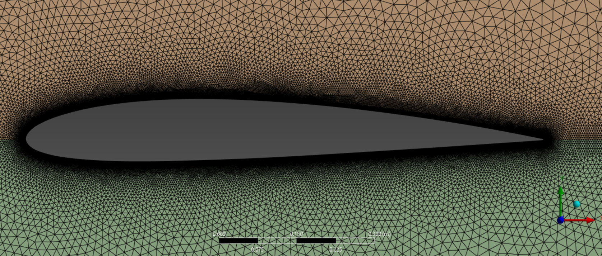
Impinging Jet Aerothermodynamics & CFD
🧪 Kalibracja Eksperymentalna i Strategia Modelowania
Strugi uderzające gazu stanowią jeden z najbardziej wymagających przypadków testowych w aerotermodynamice, łącząc skoki ciśnienia spiętrzenia, intensywne ścinanie w przyściennym strumieniu rozlewnym oraz lokalne szczytowe współczynniki wnikania ciepła, kluczowe dla chłodzenia łopatek turbin i komór spalania silników rakietowych.
Aby zamodelować ściśle dwuwymiarowy opływ uderzeniowy w programie ANSYS CFX (który natywnie operuje w 3D), zaprojektowałem jednoelementową domenę pseudo-2D z symetrycznymi i periodycznymi warunkami brzegowymi. Opracowałem dedykowaną funkcję User-Defined Function (UDF) w języku C, zadającą profil prędkości w pełni rozwiniętego przepływu turbulentnego w rurze na wylocie dyszy, co zapewniło w pełni deterministyczne warunki wlotowe.
📊 Główne Wnioski i Analiza Wymiany Ciepła
- Rozbieżność modeli turbulencji: Zestawiłem model SST \(k\text{-}\omega\) z formułami \(k\text{-}\epsilon\), wykazując, że standardowe modele lepkości burzliwej nadmiernie zawyżają energię kinetyczną turbulencji w punkcie spiętrzenia bez zastosowania poprawek Kato-Laundera.
- Rozkład liczby Nusselta: Wyznaczyłem rozkłady współczynników przejmowania ciepła i liczby Nusselta w korelacji z opublikowanymi danymi laserowej anemometrii dopplerowskiej (LDV), uzyskując wysoką zgodność w strefie przyspieszania strugi przyściennej.
- Zagęszczenie siatki w strefie spiętrzenia: Udowodniłem, że lokalne zagęszczenie siatki w obszarze Body of Influence (BOI) jest kluczowe dla uniknięcia sztucznej dyfuzji numerycznej w warstwie ścinania strugi.

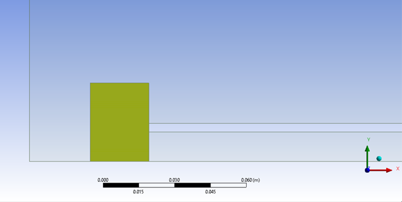


Aeromechanics & Turbomachinery Blade Dynamics
✈️ Aeromechanika Łopatek Sprężarek i Turbin Silników Lotniczych
Podczas pracy w Engineering Design Center (EDC) / Instytucie Lotnictwa w Warszawie we współpracy z GE Aerospace, prowadziłem analizy aeromechaniczne wirujących podzespołów sprężarek i turbin silników lotniczych. Głównym celem było zapobieganie zjawiskom flatteru aeromechanicznego i eliminacja ryzyka zmęczenia wysokocyklowego (HCF) wywoływanego niestacjonarnym opływem aerodynamicznym.
📈 Analiza Diagramu Campbella
Tworzyłem wielorzędowe diagramy Campbella w całym zakresie obrotów silnika (od biegu jałowego do prędkości maksymalnej). Lokalizowałem niebezpieczne przecięcia rezonansowe, w których częstości własne tarczy z łopatkami pokrywały się z harmonicznymi wymuszeń aerodynamicznych (rzędy silnikowe, częstości przejścia śladów aerodynamicznych wieńców kierowniczych oraz zaburzenia ciśnienia wlotowego). Kierowałem optymalizacją rozkładu masy i sztywności łopatek, aby ominąć pasma rezonansowe bez strat na sprężu aerodynamicznym.
🔬 Analiza Modalna i Zmęczenie Wysokocyklowe (HCF)
Przeprowadzałem trójwymiarowe analizy modalne MES dla drgań giętnych, skrętnych i pasmowych z uwzględnieniem stopów metali o własnościach zależnych od temperatury. Wyznaczałem zmodyfikowane diagramy Goodmana do oceny zmiennych naprężeń drganiowych w obecności naprężeń średnich od sił odśrodkowych i termicznych. Weryfikowałem prognozy analityczne z danymi z prób silnikowych z tensometrów dynamicznych oraz optycznych sensorów Blade Tip-Timing (BTT).


RFA ONE Launch Vehicle Aerodynamics
🚀 Aerodynamic Engineering Internship at Rocket Factory Augsburg
At Rocket Factory Augsburg (RFA) in Augsburg, Germany, I participated in external aerodynamic characterization dla rakiety orbitalnej RFA ONE. Zakres moich analiz obejmował całą obwiednię lotu atmosferycznego, minimalizację oporu okołodźwiękowego oraz modelowanie złożonych oddziaływań aerotermicznych w rejonie dennym wywołanych strugami silników.
🌌 Analiza Pełnego Zakresu Liczb Macha Lotu
- Wznoszenie poddźwiękowe (M < 0,8): Wyznaczyłem rozkłady współczynnika ciśnienia \(C_p\) podczas startu i wznoszenia przy maksymalnym ciśnieniu dynamicznym max-Q.
- Reżim okołodźwiękowy (0,8 < M < 1,2): Badałem zjawiska oddziaływania fal uderzeniowych z warstwą przyścienną (SWBLI) na przejściu owiewki, kołnierzach separacji stopni i osłonach kabli w celu eliminacji pęcherzy oderwania i drgań buffetingowych.
- Reżim naddźwiękowy (1,2 < M < 5,0): Scharakteryzowałem zakotwiczenie stożkowej fali uderzeniowej, wachlarze fal rozrzedzeniowych oraz przesunięcie środka parcia (\(x_{\text{cp}}\)) w kierunku rufy w celu zdefiniowania marginesów stateczności dla algorytmów GNC.
🔥 Recyrkulacja Denna Gazów Wylotowych Silników (Plume-On vs Plume-Off)
Modelowałem przepływ z włączonymi i wyłączonymi silnikami w ANSYS Fluent w celu oceny ekspansji strugi gazów wylotowych. Zidentyfikowałem recyrkulujące wiry toroidalne we wnęce dennej wywołujące lokalne konwekcyjne i radiacyjne obciążenia cieplne siłowników wychylenia silników.
🐍 Zautomatyzowane Środowisko Post-Processingu w Pythonie
Opracowałem skrypty automatyzujące w języku Python do bezpośredniego parsowania wyników z ANSYS Fluent, wyznaczania współczynników sił i momentów aerodynamicznych (\(C_A, C_N, C_m\)), współrzędnych środka parcia oraz kątów skośnych fal uderzeniowych.
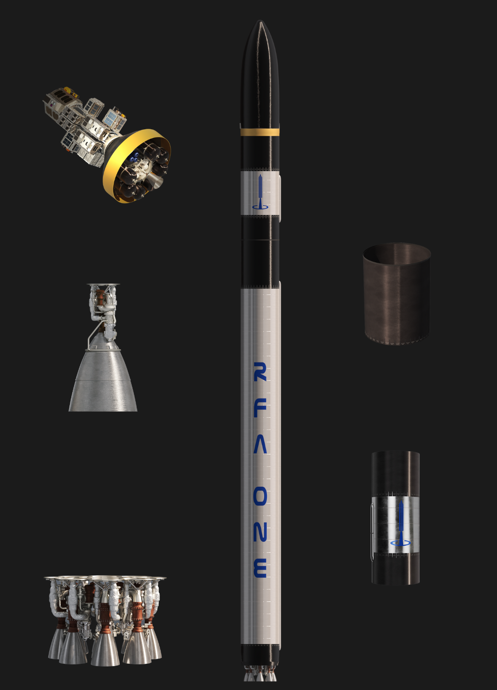
Starship Atmospheric Reentry Aerodynamics
🚀 Numeryczna Aerodynamika Wejścia Starshipa w Atmosferę
Przeprowadziłem szerokie badania numeryczne aerodynamiki pojazdu SpaceX Starship podczas wejścia w atmosferę. Przeanalizowałem, jak tępy kadłub dziobowy, ruchome canardy przednie i klapy rufowe współpracują, kontrolując pochylenie, siłę nośną, opór i orientację pojazdu podczas manewru opadania brzuchem do dołu (belly-flop) przy wysokich kątach natarcia.
📊 Dyskretyzacja Siatki o Rozmiarze 15,5 Miliona Komórek
Zbudowałem domenę obliczeniową o rozmiarze 15,5 miliona komórek w ANSYS Fluent z wykorzystaniem siatek wielościenno-pryzmatycznych (poly-hexcore). Umieściłem strefy zagęszczenia Bodies of Influence (BOI) wokół szczelin zawiasów canardów i stref wychylenia klap w celu uchwycenia oderwania fal uderzeniowych, recyrkulacji po stronie zawietrznej i poprzecznego oderwania warstwy przyściennej przy zachowaniu \(y^+ \approx 1,0\).
⚙️ Zasada Superpozycji Sił Sterowania Aerodynamicznego
- Macierz wychyleń: Przeprowadziłem symulacje canardów i klap rufowych dla niezależnych i przeciwsobnych wychyleń w kanałach pochylenia, odchylenia i przechylenia.
- Weryfikacja superpozycji: Udowodniłem, że siły i momenty aerodynamiczne canardów dziobowych i klap rufowych można z wysoką dokładnością składać liniowo (błąd sprzężeń poniżej kilku procent), co pozwoliło zredukować nakład obliczeniowy o ponad 60%.
- Aerodynamiczna Baza Danych (ADB): Opracowałem stabelaryzowaną bazę charakterystyk aerodynamicznych oraz skrypty interpolacyjne w Pythonie do symulacji trajektorii 6-DOF i planowania korytarza wejścia.


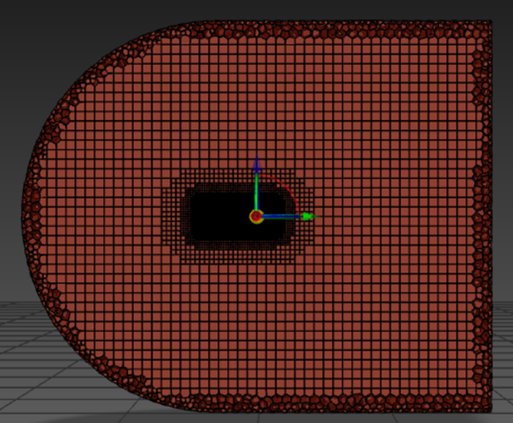


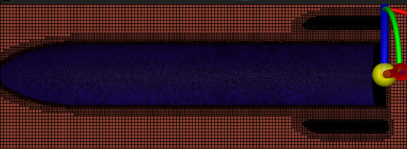
Falcon 9 Reusable Grid Fin Aerodynamics
🚀 Reusable Booster Atmospheric Guidance
Moja praca inżynierska pt. „Aerodynamic Performance Analysis of Falcon 9 Grid Fins: A Computational Investigation” poświęcona była analizie mechaniki płynów tytanowych sterów kratownicowych pierwszego stopnia Falcona 9 podczas powrotu atmosferycznego.
Siatkowe stery kratownicowe oferują wybitną skuteczność sterowania przy minimalnym momencie zawiasowym w porównaniu ze sterami płytowymi, stwarzają jednak poważne wyzwania związane ze zjawiskiem dławienia fal uderzeniowych w korytarzu okołodźwiękowym.
🔬 Modelowanie CFD i Fizyka Fal Uderzeniowych
- Geometrie obliczeniowe: Zbudowałem dwuwymiarowe kratownice planarne oraz pełne konfiguracje trójwymiarowe na kadłubie rakiety z płaszczyznami symetrii, aby precyzyjnie odwzorować interferencję aerodynamiczną kadłub-ster.
- Zjawisko dławienia okołodźwiękowego: Zaobserwowałem formowanie się prostopadłych fal uderzeniowych przed komórkami kratownicy przy dławieniu przepływu wewnętrznego w okolicach Ma 1,0, generujące gwałtowny wzrost oporu falowego.
- Opóźnienie wzrostu oporu dzięki skosowi krawędzi: Wykazałem, jak skośna geometria krawędzi natarcia w sterach SpaceX utrzymuje skośne fale uderzeniowe, opóźniając zjawisko dławienia poza Ma 1,5.
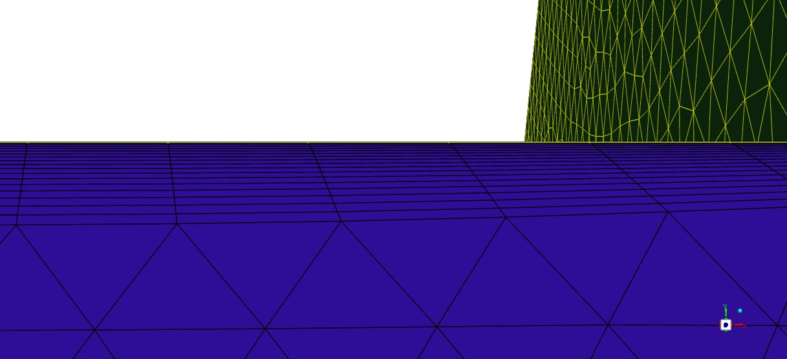

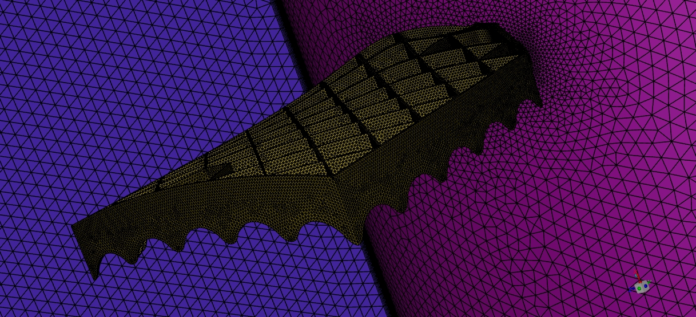


Walidacja Laminarnych Modeli Nagrzewania Aerodynamicznego Kapsuły MSL Względem Danych z Tunelu Szokowego T5
🪐 Project Summary
Niniejsza praca magisterska poświęcona była numerycznej walidacji laminarnych modeli aerotermodynamicznych kapsuły wejściowej Mars Science Laboratory (MSL) w programie ANSYS Fluent, skalibrowanych na podstawie danych pomiaru strumienia ciepła z tunelu uderzeniowego Caltech T5. Przyswoiłem pełny zestaw sformułowań teoretycznych i równań rządzących (ściśliwe równania Naviera-Stokesa, zachowanie masy wielu składników, energia drgań cząsteczkowych i człony źródłowe reakcji chemicznych) oraz zbadałem wpływ rozdzielczości siatki, modeli 1-T i 2-T oraz katalizy powierzchniowej na szczytowe obciążenia cieplne pod kątem projektowania osłon termicznych (TPS).
Podczas wejścia w atmosferę Marsa z hiperdźwiękowymi prędkościami od \(6,0\text{ do }8,5\text{ km/s}\), energia kinetyczna pojazdu ulega gwałtownej konwersji w energię wewnętrzną i cieplną na odsuniętej fali uderzeniowej. W atmosferze Marsa (\(\sim 97,1\%\text{ CO}_2, 2,9\%\text{ N}_2\)), temperatura za falą przekracza \(6\,000\text{–}10\,000\text{ K}\), wywołując silną nierównowagę termiczną (relaksację drgań cząsteczkowych) oraz nierównowagę chemiczną (dysocjację molekuł \(CO_2\) na \(CO, C, O\) oraz \(O_2\)).
Praca magisterska stanowi kompleksową walidację numeryczną modelowania aerotermodynamiki laminarnej dla 70-stopniowej stożkowo-kulistej osłony czołowej pojazdu Mars Science Laboratory (MSL). Obliczenia przeprowadzono w programie ANSYS Fluent i poddano ścisłej walidacji względem eksperymentalnych pomiarów powierzchniowego strumienia ciepła z hiperdźwiękowego tunelu uderzeniowego Caltech T5 (strzał 2254), opublikowanych przez Wrighta i in. (NASA Ames / Caltech).
W ramach badań przeanalizowano sprzężony wpływ dokładności dyskretyzacji przestrzennej (schematy Upwind 1. rzędu vs 2. rzędu), stanu termicznego gazu (model jedno-temperaturowy 1T vs dwu-temperaturowy Parka 2T) oraz warunków brzegowych katalityczności ścianki (niekatalityczna, model Mitcheltree o skończonej szybkości reakcji rekombinacji, superkatalityczna i adiabatyczna), określając pełną obwiednię nagrzewania aerodynamicznego na potrzeby doboru grubości TPS.
🧪 Caltech T5 Hypervelocity Shock Tunnel (Shot 2254)
Warunki tunelu uderzeniowego z tłokiem swobodnym odtwarzające rzeczywistą entalpię spiętrzenia wejścia w atmosferę Marsa:
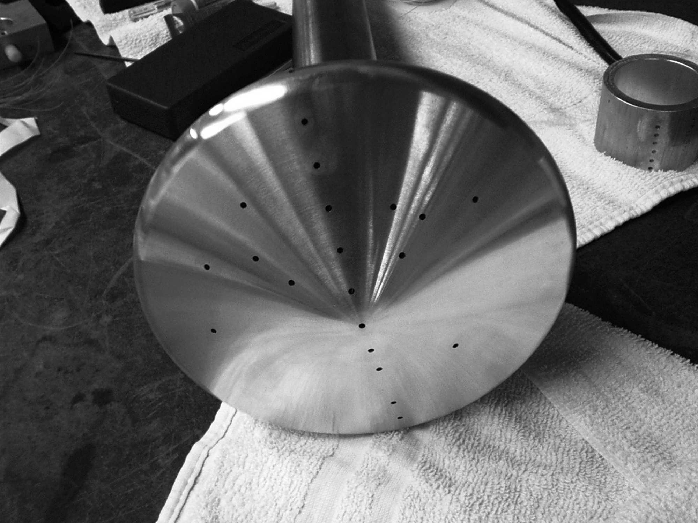

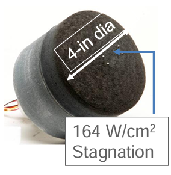
📐 Theoretical Formulations & Governing Aerothermodynamic Equations
Hiperdźwiękowe pole przepływu opisują ściśliwe równania Naviera-Stokesa rozszerzone o zachowanie masy poszczególnych składników, zachowanie energii drganiowej oraz człony źródłowe reakcji chemicznych:
⚗️ 5-Składnikowy Mechanizm Reakcji w Ditlenku Węgla
Mechanizm kinetyki chemicznej obejmuje 5 składników obojętnych (\(CO_2, CO, C, O, O_2\)) podlegających 5 elementarnym reakcjom wprost i wstecz:
🛡️ Sformułowania Warunków Brzegowych Katalizy Ścianki
- Ścianka niekatalityczna (NC): Chemicznie obojętna powierzchnia o zerowym strumieniu masy składników (\(J_{s,w} = 0\)). Zdysocjowane atomy nie ulegają rekombinacji na ściance, dając teoretyczną dolną granicę nagrzewania aerodynamicznego (\(q_{\text{stag}} \approx 620\text{--}662\text{ W/cm}^2\)).
- Model katalityczny Mitcheltree limitowany dyfuzją: Niejednorodny model rekombinacji Eley-Rideal / Langmuir-Hinshelwood opracowany dla osłon marsjańskich: \[ O + s \to O_s, \quad CO + s \to CO_s, \quad CO_s + O_s \to CO_2 + 2s \] Prowadzi rekombinację tlenku węgla i tlenu atomowego do dwutlenku węgla z szybkością ograniczoną dyfuzją przez warstwę przyścienną (\(q_{\text{stag}} \approx 712\text{--}739\text{ W/cm}^2\)).
- Ścianka superkatalityczna (SC): Wyidealizowana ścianka w pełni katalityczna, wymuszająca udziały masowe stanu równowagi gazu nienaruszonego (\(Y_{CO_2} = 1,0\)), uwalniając całą entalpię dysocjacji chemicznej bezpośrednio do poszycia pojazdu (\(q_{\text{stag}} \approx 1125\text{--}1140\text{ W/cm}^2\)).
- Ścianka adiabatyczna: Warunek zerowego strumienia ciepła (\(q_w = 0\)) do wyznaczenia temperatury spiętrzenia odzysku \(T_{aw} \approx 6\,612\text{ K}\).


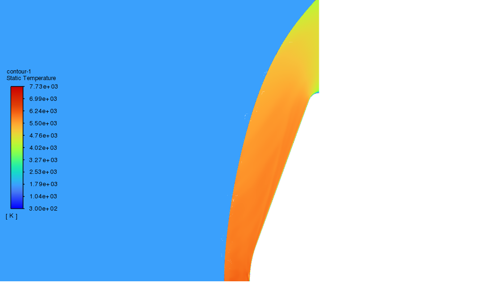


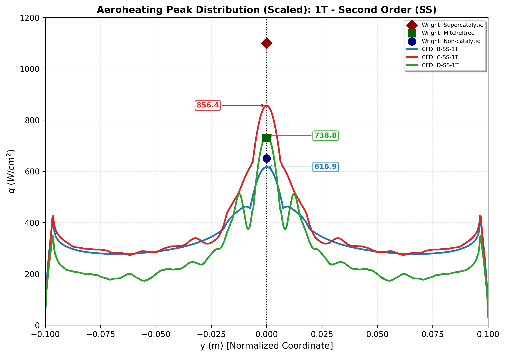

🔬 Direct Benchmark Against Experimental Thermocouple Measurements
Poniższy wykres przedstawia kluczowy wynik pracy: walidację obliczeń Fluent w schemacie drugiego rzędu Parka 2T (2T-SS) względem eksperymentalnych pomiarów termopar współosiowych z tunelu hiperdźwiękowego Caltech T5 (strzał 2254, Wright et al.), zestawionych z kodami NASA DPLR i LAURA:

🔑 Główne Wnioski Naukowe z Pracy
- Przewaga modelu katalitycznego Mitcheltree: Model rekombinacji limitowanej dyfuzją Mitcheltree w schemacie 2T-SS (\(q_{\text{stag}} = 738,7\text{ W/cm}^2\)) wykazuje znakomitą zgodność z eksperymentalnymi pomiarami termopar z tunelu T5 w całym obszarze sferycznego noska (\(r/R_b \le 0,5\)) oraz wzdłuż stożka.
- Granice katalityczności ścianki: Założenie ścianki superkatalitycznej zawyża nagrzewanie w punkcie spiętrzenia o ponad 54,3% (\(1\,140,1\text{ W/cm}^2\)), podczas gdy założenie ścianki niekatalitycznej zaniża je o 10,3% (\(662,3\text{ W/cm}^2\)). Jednoznacznie dowodzi to, że założenie pełnej katalityczności narzuca zbyt dużą masę osłony termicznej (TPS), a założenie braku katalizy groziłoby katastrofalnym przepaleniem poszycia.
- Wpływ nierównowagi drganiowej (2T vs 1T): Uwzględnienie równania energii drgań Parka (model 2T) zwiększa obliczony strumień ciepła w punkcie spiętrzenia o około 3,7% i zmniejsza odległość fali uderzeniowej od czoła, gdyż zamrożenie drganiowe opóźnia dyssypację energii do drgań translacyjnych.
- Rząd dyskretyzacji przestrzennej: Schematy Upwind pierwszego rzędu wprowadzają sztuczną dyfuzję numeryczną, która pogrubia warstwę uderzeniową i zaniża szczytowe nagrzewanie na nosku oraz na narożu. Dokładność drugiego rzędu jest bezwzględnie konieczna do wymiarowania osłon termicznych.
Aerodynamika Wiatru w Mieście i Komfort Pieszych
🏙️ Środowiskowa Mechanika Płynów i Mikroklimat Miejski
Ocena opływu aerodynamicznego wywołanego wprowadzeniem wieżowca w gęstą istniejącą tkankę miejską. Projekt analizował przyspieszenie strugi wiatru na poziomie pieszych, spływ wirów narożnych i stagnację w śladzie aerodynamicznym pod kątem bezpieczeństwa i komfortu pieszych.
🛠️ Korelacja Eksperymentalna i Procedury UDF
- Model w skali: Zbudowano model geometryczny CAD w skali 1:1500 reprezentujący kwartał miejski z budynkami do 90 m wysokości, odpowiadający geometrii pomiarowej w tunelu aerodynamicznym.
- Logarytmiczna atmosferyczna warstwa przyścienna: Opracowano dedykowane funkcje UDF w języku C do zadawania pionowych profili prędkości i intensywności turbulencji zgodnych z III i IV kategorią terenu wg Eurokodu.
- Walidacja wielokierunkowa: Przebadano opływ dla kątów natarcia wiatru 0°, 45° i 90°, uzyskując korelację prognozy prędkości w granicach ±10% względem wskazań sond w tunelu aerodynamicznym.
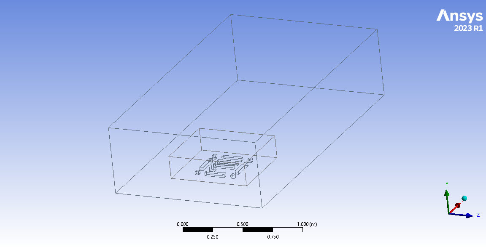

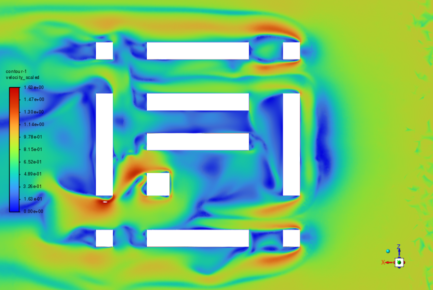


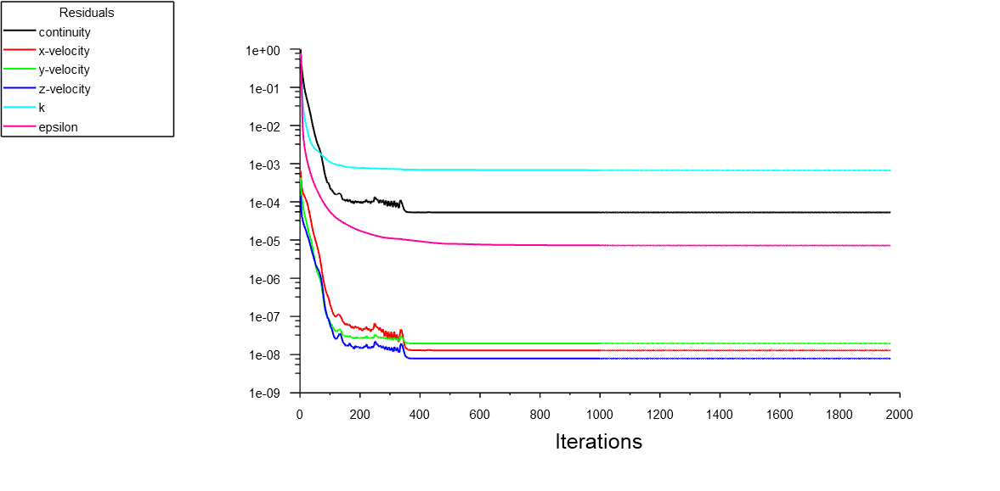
Interaktywne Laboratorium Aerodynamiki i Aerotermodynamiki
📐 Projekt 1: Warstwa przyścienna i jakość siatki przyściennej (y⁺)
Oblicz wymaganą wysokość pierwszej komórki pryzmatycznej (\(\Delta y\)) dla docelowego \(y^+ \approx 1\), rozdzielczości podwarstwy lepkiej, grubości warstwy przyściennej (\(\delta_{99}\)) i współczynnika tarcia (\(C_f\)) w atmosferze Ziemi i Marsa.
| Wys z [km] | Temp T [K] | Ciśn P [Pa] | Gęst ρ [kg/m³] | Lepk Dyn μ [μPa·s] | Lepk Kin ν [m²/s] |
|---|
Dla przepływu turbulentnego (\(Re_L \ge 5 \times 10^5\)), \(C_f\) oblicza się ze wzoru Schlichtinga i Gerstena (2016) [3] / Franka M. White'a (wyd. 7, rozdz. 7.4) [4]:
C_f = 0,0592 · Re_L^(-0,2), wyprowadzonego z profilu 1/7 potęgi Prandtla dla przepływu turbulentnego na gładkiej ściance.
🔥 Project 2: Fay-Riddell Hypersonic Aeroheating Solver
Laminarny strumień ciepła w punkcie spiętrzenia obliczany pełnym sformułowaniem Fay-Riddell z Pracy Magisterskiej (str. 20–23) [1][8], with Normal Shock jump relations [6], Newtonian velocity gradient [6], Sutherland viscosities [7], and boundary layer wall catalysis [1].
📖 Równania Matematyczne i Prawa Fizyczne Wykorzystane w Obliczeniach
Kompletne sformułowania analityczne, relacje skoku gazodynamicznego oraz prawa aerotermodynamiki zaimplementowane w powyższych modułach.
Projekt 1: Lepka Warstwa Przyścienna, Tarcie Powierzchniowe i Rozdzielczość Siatki (y⁺)
6 Sformułowań
▼
Wyznacza temperaturę otoczenia \(T(z)\) i ciśnienie statyczne \(P(z)\) dla danej wysokości \(z\) (Wzorcowa Atmosfera USA 1976 [5] lub model atmosfery Marsa CO₂), oblicza gęstość z równania stanu gazu doskonałego oraz stosuje prawo Sutherlanda [7] do wyznaczenia lepkości dynamicznej \(\mu\) i kinematycznej \(\nu\).
Określa stosunek dynamicznych sił bezwładności do sił lepkości wzdłuż długości charakterystycznej \(L\) [3][4]. Decyduje o laminarnym lub turbulentnym charakterze przepływu w warstwie przyściennej (\(Re_{\text{crit}} \approx 5 \times 10^5\)).
Oblicza bezwymiarowy współczynnik tarcia powierzchniowego ze ścisłego rozwiązania laminarnego Blasiusa [2] lub korelacji turbulentnej Schlichtinga-Gerstena / Franka White'a [3][4].
Wyznacza odległość normalną od ścianki, w której prędkość styczna osiąga \(99\%\) prędkości napływu (\(u = 0,99 U_\infty\)), wyznaczając wymaganą grubość warstw pryzmatycznych siatki.
Określa styczną siłę lepkości na jednostkę powierzchni ścianki oraz definiuje charakterystyczną prędkość tarcia \(u_\tau\), fundamentalną dla uniwersalnego prawa ścianki [4].
Oblicza wymaganą wysokość pierwszej komórki pryzmatycznej siatki \(\Delta y\) do rozstrzygnięcia laminarnej podwarstwy lepkiej (\(y^+ \approx 1\)) dla modeli turbulencji low-Reynolds (\(k\text{-}\omega\) SST, Spalart-Allmaras) [4].
Projekt 2: Hipersoniczna Gazodynamika, Warstwa Uderzeniowa i Transport Wysokotemperaturowy
7 Sformułowań
▼
Oblicza prędkość dźwięku \(a_\infty\) z temperatury statycznej \(T_\infty\) i wykładnika izentropy gazu \(\gamma\), wyznaczając rzeczywistą prędkość lotu \(V_\infty\) dla zadanej liczby Macha \(M_\infty\) [6].
Opisuje zachowanie masy, pędu normalnego i całkowitej energii na odsuniętej fali uderzeniowej wzdłuż osiowej linii prądu, dostarczając parametry na zewnętrznej krawędzi warstwy przyściennej (\(p_e, T_e, \rho_e\)) [6].
Zgodnie z równaniem pędu warstwy przyściennej (\(\partial p / \partial y = 0\)), ciśnienie na ściance równe jest ciśnieniu na krawędzi za falą \(p_e\). Gęstość gazu na ściance \(\rho_w\) obliczana jest przy izotermicznej temperaturze ścianki (\(T_w = 300\text{ K}\)) [8].
Oblicza temperaturową lepkość dynamiczną na gorącej krawędzi warstwy przyściennej (\(\mu_e\)) oraz na zimnej ściance (\(\mu_w\)) dla powietrza (\(S = 110,4\text{ K}\)) i \(\text{CO}_2\) (\(S = 222,0\text{ K}\)) [7][8].
Oblicza przyspieszenie opływu od punktu spiętrzenia (\(x = 0\)) dla sferycznego noska o promieniu \(R_n\) ze zmodyfikowanej newtonowskiej teorii uderzeniowej (Równanie 9 w Pracy Magisterskiej, s. 21) [6][8].
Określa całkowitą entalpię spiętrzenia \(h_{0e}\) wnikającą do warstwy uderzeniowej oraz entalpię ścianki \(h_w\), definiując termodynamiczny gradient entalpii \(\Delta h = h_{0e} - h_w\) napędzający transport ciepła [6][8].
Oblicza całkowity odzysk ciśnienia spiętrzenia za normalną falą uderzeniową, określając zachowanie ciśnienia spiętrzenia i generację entropii przy prędkościach hiperdźwiękowych [6].
Projekt 2: Hipersoniczne Nagrzewanie Aerodynamiczne i Katalityczność (Równanie 5 z Pracy Magisterskiej)
2 Sformułowania z Pracy Magisterskiej
▼
Określa wzrost lub redukcję powierzchniowego strumienia ciepła wywołaną rekombinacją atomową zdysocjowanych składników (\(\text{CO}_2 \rightarrow \text{CO} + \text{O}\) lub \(\text{O}_2 \rightarrow 2\text{O}\)) dyfundujących przez warstwę przyścienną wg liczby Lewisa \(Le\) oraz katalitycznej sprawności ścianki [1][8].
Klasyczne sformułowanie teorii warstwy przyściennej Faya i Riddella (1958) [1], poddane walidacji w pracy magisterskiej Kacpra Frelka z danymi doświadczalnymi z tunelu Caltech T5 (strzał 2254, s. 20–23) [8]. Integruje własności transportowe za falą, izotermiczną zimną ściankę (\(T_w = 300\text{ K}\)), newtonowski gradient prędkości, napędzający gradient entalpii i katalizę chemiczną, wyznaczając szczytowy strumień ciepła na ściance \(q_w\).
📚 Literatura i Cytowania Naukowe
Główne recenzowane publikacje naukowe, fundamentalne traktaty aerotermodynamiczne, wzorce atmosferyczne oraz benchmarki z pracy magisterskiej stanowiące podstawę powyższych równań.
Wyprawy Globalne i Perspektywy Kulturowe
⛩️ Japonia — Tokio, Kioto, Nara i Fukuoka
Spacerując tętniącymi życiem ulicami Tokio w Shibuyi i Shinjuku, wędrując o wschodzie słońca alejami cynobrowych bram torii Fushimi Inari w Kioto, spotykając wolno żyjące jelenie w Narze i delektując się ramenem tonkotsu w ulicznych kramach yatai w Fukuoce. Japonia pokazała mi niezwykłą wartość dbałości o każdy detal — dokładnie tej samej filozofii, której wymaga tworzenie precyzyjnych siatek obliczeniowych CFD i inżynieria aerotermodynamiczna.
🏙️ Korea Południowa — Seul, Gangnam i Historyczne Pałace
Odkrywając gwarny targ Myeongdong w Seulu, podziwiając odważną architekturę Gangnam i Dongdaemun oraz zgłębiając historię dynastii Joseon w pałacu Gyeongbokgung. Dynamiczny postęp technologiczny Korei Południowej idealnie współgra z moją pasją do zaawansowanych innowacji w lotnictwie i kosmonautyce.
🏛️ Grecja — Wybrzeża Morza Egejskiego i Dziedzictwo Antyku
Od skąpanych w słońcu wód Krety po antyczne ruiny, Grecja zapewniła niezrównany letni odpoczynek pomiędzy intensywnymi kampaniami symulacji numerycznych. Przemierzanie krętych nadmorskich dróg, próbowanie autentycznych smaków śródziemnomorskich oraz chłonięcie wieków klasycznej historii.


Przyszłe Horyzonty Badawcze
🌌 DSMC (Direct Simulation Monte Carlo)
Symulacja przejściowych i swobodno-molekularnych reżimów hiperdźwiękowych, w których hipoteza ciągłości ośrodka przestaje obowiązywać (\(Kn > 0,05\)). Śledzenie stochastycznej dynamiki zderzeń miliardów cząsteczek gazu podczas wejścia w górne warstwy atmosfery.
🔄 Hybrid CFD-DSMC Multiscale Solvers
Sprzęganie solwerów ośrodka ciągłego Naviera-Stokesa w gęstych warstwach uderzeniowych z cząstkami DSMC w rozrzedzonych domenach zewnętrznych, maksymalizując szybkość obliczeń bez utraty wierności na poziomie molekularnym.
⚛️ Kinetic Boltzmann Solvers
Solwery metody dyskretnych prędkości (DVM) całkujące nieliniowe równanie transportu Boltzmanna, eliminujące szum statystyczny metody Monte Carlo w reżimach mikroprzepływowych i rozrzedzonych.
🧠 Physics-Informed Neural Networks (PINNs)
Bezpośrednie osadzanie praw zachowania Naviera-Stokesa i warstwy przyściennej w funkcji strat głębokich sieci neuronowych na potrzeby estymacji współczynników aerodynamicznych w czasie rzeczywistym podczas naprowadzania statków kosmicznych.